Momentos
Guarda instantes con nombre, etiquetas y nota. Si cargas uno por error, «Antes de cargar» lo deshace.
Para iPhone y Android
Un emulador nativo con núcleo propio para Game Boy, Color y Advance. Sin internet, sin anuncios y sin cuentas.
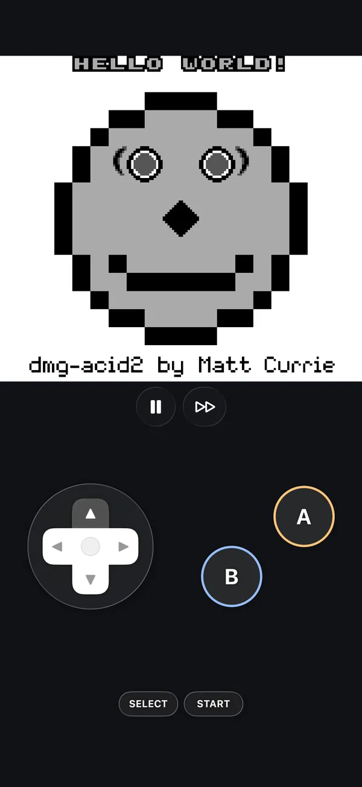
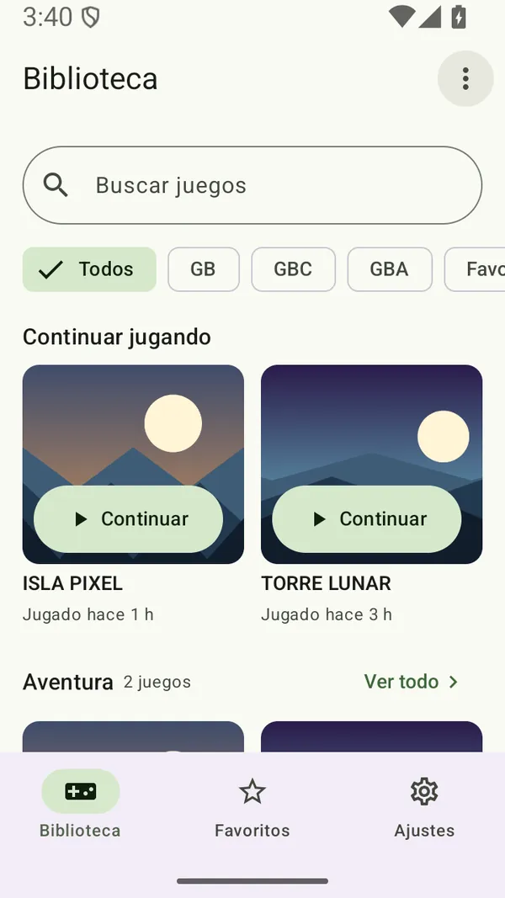
PocketGB está escrito en Swift y en Kotlin sobre un núcleo propio en C, el mismo en los dos teléfonos. No se conecta a internet: ni telemetría, ni anuncios, ni portadas descargadas. Y está pensado para no perder nunca una partida: cada guardado se escribe de forma atómica, con cinco copias de seguridad y otra junto al juego.
Capturas reales del simulador de iPhone y del emulador de Android, con juegos de prueba libres y bibliotecas de demostración. La app está en español.
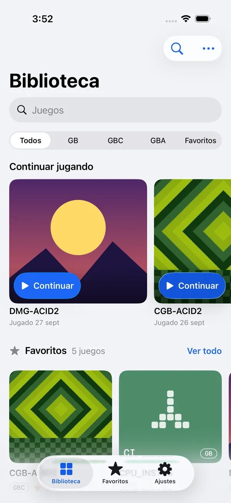
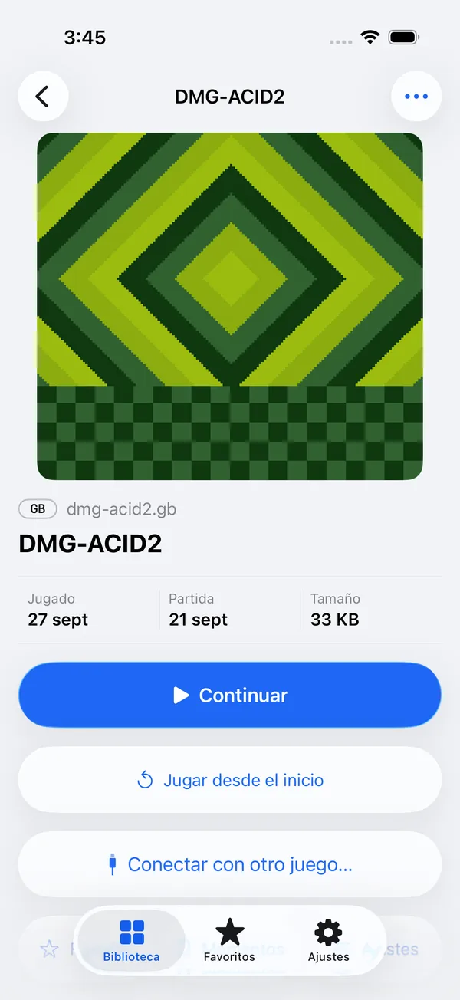
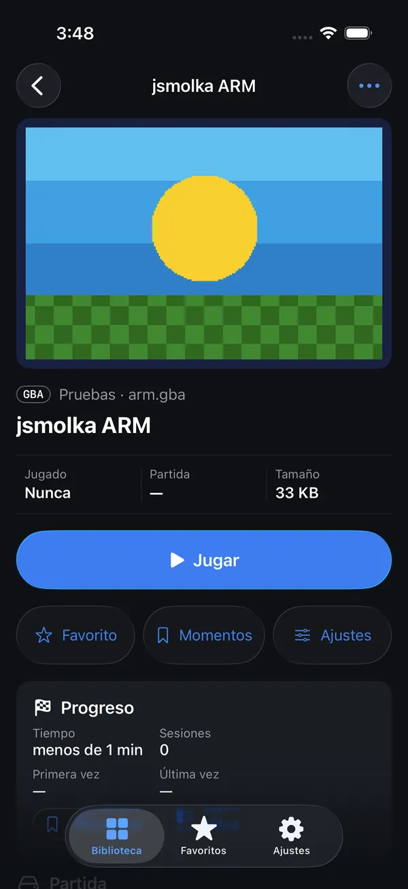
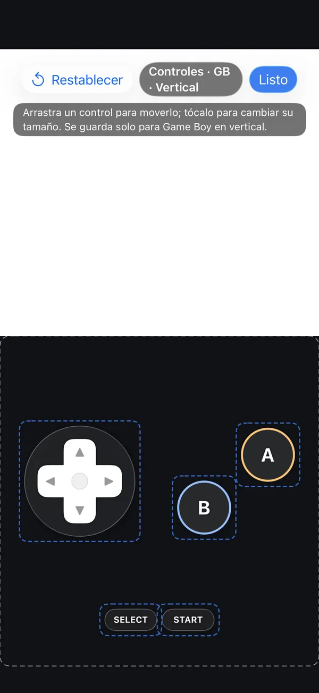
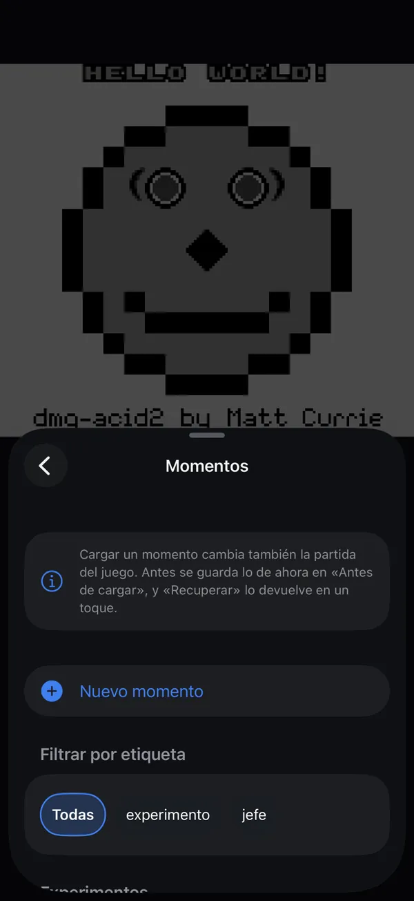
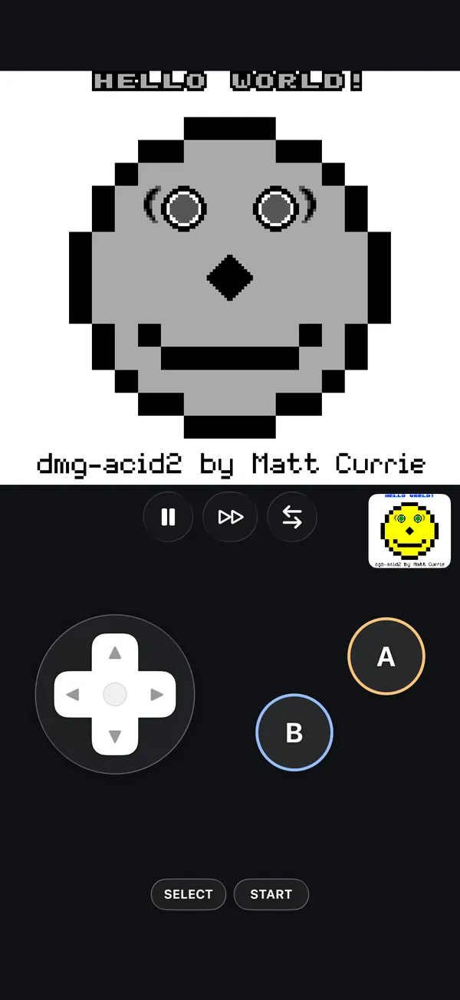
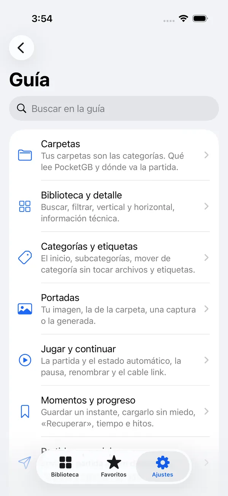
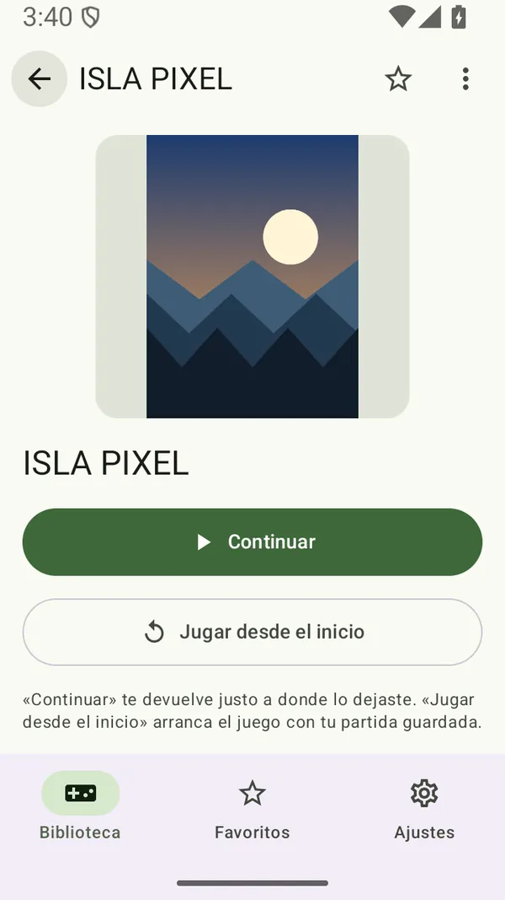
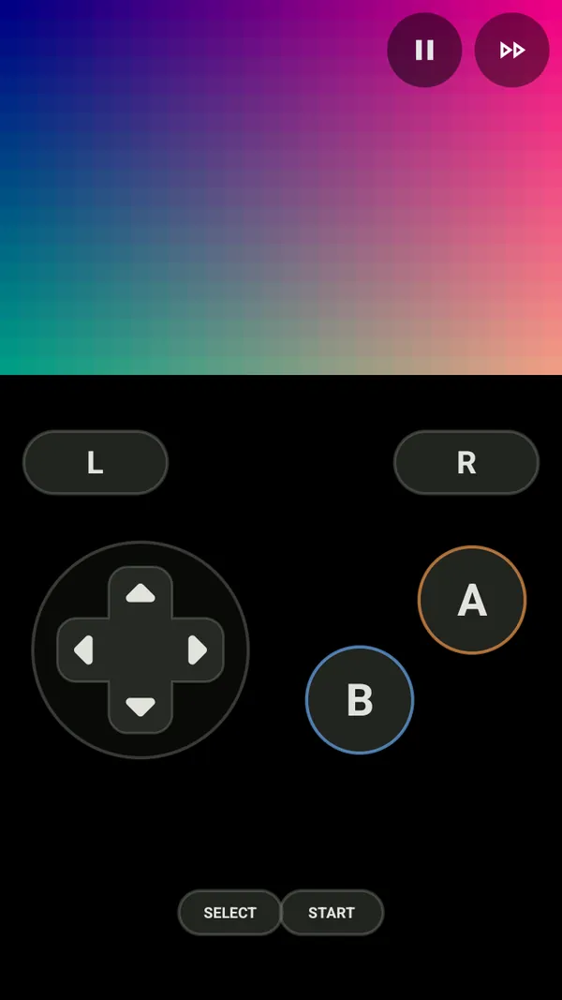
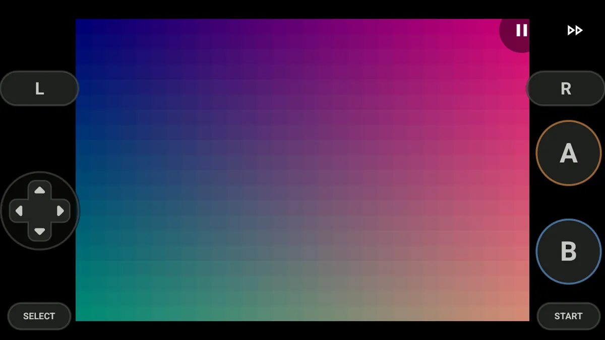
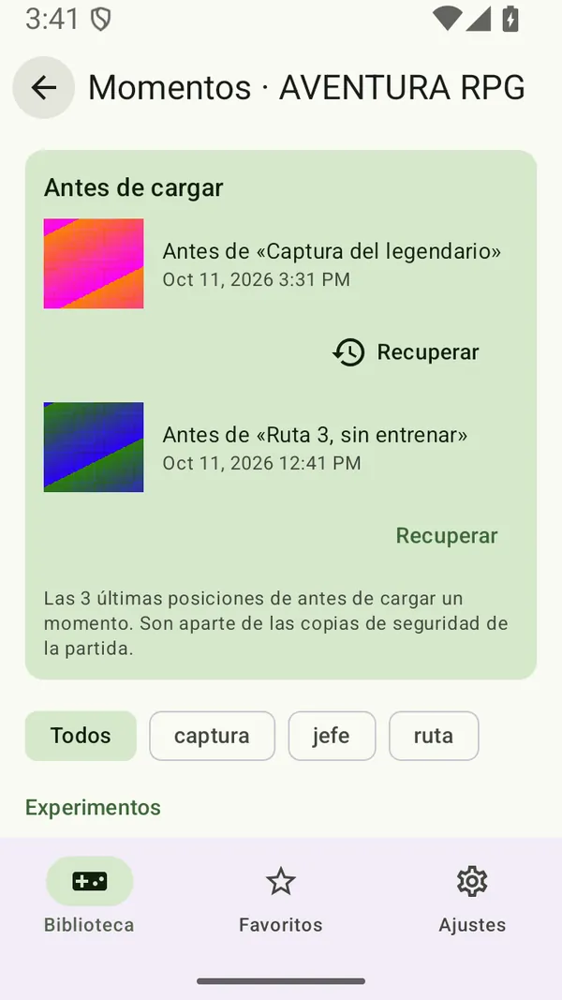
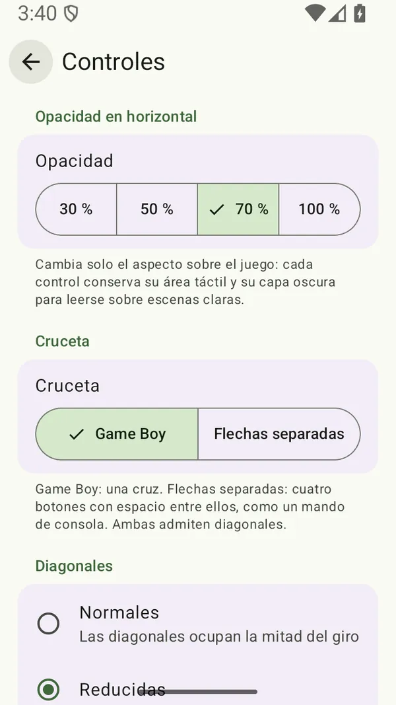
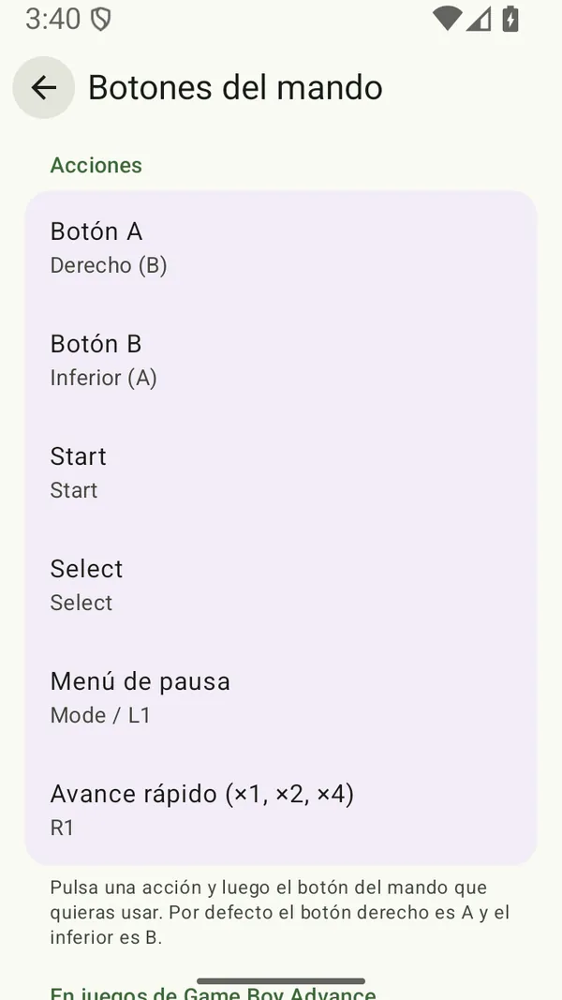
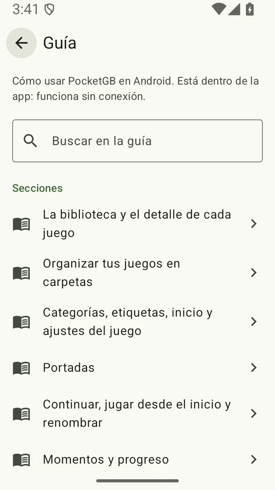
Todo funciona sin conexión y con los archivos que eliges tú.
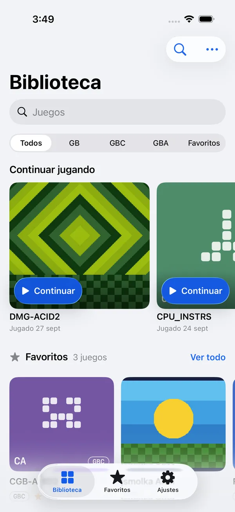
Eliges una carpeta y PocketGB la lee tal cual: no copia, no mueve y nunca modifica tus juegos.
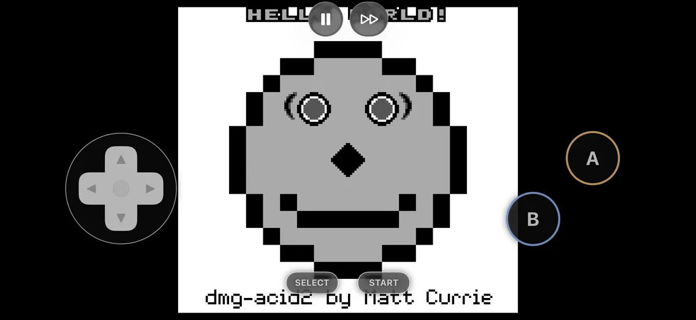
Controles debajo de la pantalla en vertical y translúcidos sobre el juego en horizontal, con háptica en cada pulsación.
Lo que guardas está a salvo y te acompaña de un teléfono a otro.
Envía tu partida con la hoja de compartir o con tu Drive y sigue en el otro teléfono justo donde la dejaste. Sin servidores.
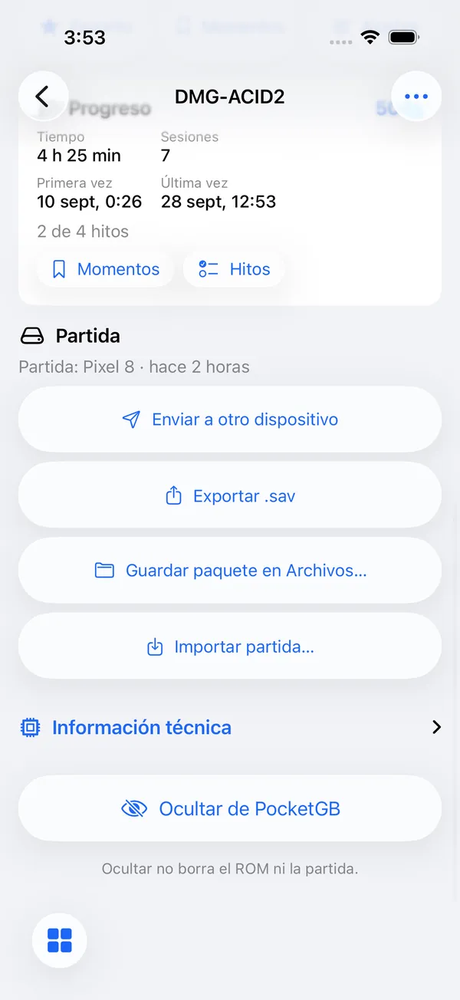
Al salir se guarda el momento exacto: el sitio, la música y hasta el diálogo abierto.
Guarda instantes con nombre, etiquetas y nota. Si cargas uno por error, «Antes de cargar» lo deshace.
Tiempo de juego, sesiones e hitos. En los Pokémon de 1.ª y 2.ª generación, lee medallas y Pokédex de tu partida.
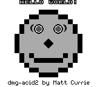
El emulador es código propio en C11, sin dependencias y determinista: la misma entrada da siempre la misma imagen. Se comprueba con las suites de pruebas abiertas que usa la comunidad.
Aún no está en las tiendas: se compila desde el código con las herramientas gratuitas de Apple y Google. Primero, descarga el código:
git clone https://github.com/JoelBerus/pocketgb.gitEn un Mac con Xcode, ve a Settings › Accounts y añade tu Apple ID. Basta con la cuenta gratuita: aparece «Personal Team».
Conecta el iPhone por cable y activa el Modo Desarrollador en Ajustes › Privacidad y seguridad. Abre el proyecto, elige tu equipo en Signing & Capabilities y pulsa Run.
open ios/PocketGB.xcodeprojLa primera vez, en el iPhone: Ajustes › General › VPN y gestión de dispositivos, tu Apple ID y Confiar.
Cada 7 días caduca la firma gratuita. Vuelve a pulsar Run y se instala encima, con tus partidas intactas. No borres la app para reinstalarla.
La cuenta gratuita admite 3 apps firmadas a la vez. Con la de pago, la firma dura un año.
En el teléfono, con Android 8.0 o posterior: Ajustes › Acerca del teléfono, toca 7 veces «Número de compilación» y activa Depuración USB en Opciones de desarrollador.
Con Android Studio (JDK 17, SDK 37 y NDK 27.3) y el teléfono conectado por USB:
cd android
./gradlew :app:installDebugAbre PocketGB, entra en Biblioteca y elige la carpeta con tus juegos: en el teléfono, en una tarjeta SD o en Google Drive.
La instalación no caduca. Para actualizar, repite el comando: se conservan tus datos.
No desinstales la app para «instalar limpio»: borrarías las partidas guardadas en el teléfono.
Mientras tanto, la forma de tenerla es compilarla desde el código.
Gratis. Versión actual: iOS 0.4 y Android 1.0.0.
No. PocketGB no incluye juegos ni enlaza a ninguno. Juegas con copias de tus propios cartuchos.
Con un lector USB como GBxCart RW o GB Operator: guardas el juego (.gb, .gbc o .gba) y su partida (.sav), así que te traes tu partida real.
No. El núcleo de Game Boy Advance imita sus funciones. Si tienes el volcado de tu propia consola, puedes ponerlo en la carpeta como gba_bios.bin.
No. No hay telemetría, anuncios ni cuentas, y las portadas nunca se descargan. Para pasar una partida a otro teléfono usas la hoja de compartir o tu propio Drive.
No. La app deja de abrirse hasta que la vuelves a instalar desde Xcode, y al instalar encima se conservan tus datos. Además, cada partida tiene una copia junto al juego.
El cable link es virtual: une dos juegos en el mismo iPhone, por ejemplo para intercambiar. No hay juego entre dos teléfonos.
La app de iOS es solo para iPhone. La de Android se adapta a pantallas anchas y plegables.
Nada: es gratis.
El código es público en GitHub. La licencia todavía no está decidida.